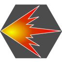

基礎知識
戦闘関係

このページでは、最終編の敵個別データを紹介している。敵パーティのデータは上リンク先を参照。
「ドロップアイテム」のデータ元はSFC版。リメイク版でもほぼ同一のアイテムを落とすのだが、一部変更されている。
筆者が実際に変更を確認したアイテムは文字色を赤くした。
敵は（おそらく）最大で3種類のアイテムを所持しており、それぞれ落とす確率は異なる。
また、落とす場合は3つのうち1つしか落とさない。
(確率・高)のアイテムも、必ずしもドロップするとは限らないことに注意。
このページの一番下、倒しにくいザコ敵の対処法も参考にしていただきたい。
| 敵名 | HP | サイズ (縦×横) | 弱点 | 耐性 | スキル | ドロップアイテム | |||||
|---|---|---|---|---|---|---|---|---|---|---|---|
| (確率・高) | (確率・中) | (確率・低） | |||||||||
| ザビエール | 20 | 2×1 | | | ジャスト モーメント 爆発 | かすていら | かすていら | かすていら | |||
| オイディプス | 64 | 2×1 | | 突 | 居合抜き 斜め斬り 斬り下ろし | てんむす | ちょんまげ | ちょんまげ | |||
| ダイダロス | 80 | 2×1 | 突 | | 連打 強烈パンチ メッタ殴り 体当たり | てんむす | ちょんまげ | ちょんまげ | |||
| ポリディクティス | 3 | 2×1 | - | | 殴り 命乞い 賄賂 トリカブト | かすていら | ビリビリまきびし | ちょんまげ | |||
| クイーンテイル | 96 | 2×1 | | | 毒鱗粉 毒針 斬り下ろし メルトブレス | マジカルウッド | ポーションＮＯ９ | 強化パーツ | |||
| ポウンバード | 120 | 2×1 | | | ヘディング 爆発 トペ・スイシーダ パンチ | 強化パーツ | - | - | |||
| ルビータイラント | 96 | 2×1 | | | すれ違い刺し 毒針 くねくねダンス 色気 | 風魔手裏剣 | 風魔手裏剣 | イザナギの巻き物 | |||
| ケルベロ | 48 | 1×1 | | | 噛み砕き 引き裂き メルトブレス 幻惑の遠吠え | ホネ肉 | ホネ肉 | ソロモンの骨 | |||
| ヌーベルルミエル | 200 | 3×2 | | | 噛み砕き くちばし 急降下 メーザー砲 | フケイの羽 | 極楽鳥の尾バネ | プラズマスパーク | |||
| ソウルイーター | 30 | 1×1 | | | 吸血 | エデンズアップル | アクシアンソード | ひょうたん | |||
| ホラーバルブ | 96 | 2×1 | | | 冷たい手 爆発 | ヨシュアの実 | - | デモンズクラウド | |||
| ファントム | 52 | 3×2 | | | みだれ撃ち トリプルショット サイドワインダー イナズマ撃ち | 聖水 | 干し肉 | 気付け薬 | |||
| 亡拳士 | 76 | 2×1 | | | 七星天分手 連続キック 締めつけ 飛び蹴り | ももまん | あんまん | ももまん | |||
| クロノレギオン | 142 | 2×2 | - | 突 | Ｖシャイン ジャンプショット ミラードライブ ソードビュー | 治り草 | 神聖アーマー | チャリオブーツ | |||
| ベアナックル | 230 | 3×2 | | | 虎形拳 雲平日月破 前混反脚 飛び蹴り | 虎の小手 | 虎の服 | 虎の服 | |||
| 猫又 | 38 | 2×1 | | | ひっかき オンチな歌 色気 油舐め | てんむす | バナナクレープ | 黒猫の靴 | |||
| 強腕戦車 | 192 | 3×2 | | | ８８ミリ戦車砲 バルカン砲 ドリャラリアット 地震 | 強化パーツ | スタンガン | ボウリングだま | |||
| メカサタケ９８ | 128 | 2×2 | 突 | | ウイリーキック 闘牛殺し 旋弓打 爆発 | 強化パーツ | コトブキラッカー | ボヨヨン銃 | |||
| ブラキオペルタ | 182 | 3×2 | | | 地震 ジャイロプレス 電影結界 エレキテル放電 | - | ロックフィスト | ロックフィスト | |||
| エントモパイラム | 108 | 2×2 | 締 | | 毒手 冷たい手 毒鱗粉 | - | マンティスハンド | マンティスハンド | |||
| バーバリアン | 56 | 2×1 | | | ドデゲスデン ウホぷぅ ガボラッチョ ばりぶる～ | - | - | 野性アーマー | |||
| 大顔面 | 172 | 2×2 | - | | 火神カグツチ 風神シナツヒコ 水神ミズハノメ 土神ハニヤスビメ | 強化パーツ | 風神の巻き物 | イザナギの巻き物 | |||
| マスタードラゴン | 12 | 1×1 | - | | メルトブレス ドラゴンフレーム 火炎放射 ジョムジョム弾 | 強化パーツ | 強化パーツ | 強化パーツ | |||
| イシュタール | 1600 | 3×3 | | | エッシャー空間 メビウスロンド 締めつけ しっぽ | ヨシュアの実 | ヨシュアの実 | 金の髪飾り | |||
| グラシャラボラス | 192 | 2×2 | | 突 | コンビネーション ドラゴンフレーム しっぽ 復元 | ユニコーンホーン | どデカホネ肉 | 獣神シャツ | |||
| ツナヨシ | 160 | 2×1 | | | コノタワケ扇子 突撃ラッパ | かすていら | かすていら | マジカルウッド | |||
| おイヌ様 | 64 | 1×1 | | | 噛み砕き 幻惑の遠吠え | 月ウサギの足 | マジカルウッド | マジカルウッド | |||
| グラングラス | 409 | 3×3 | | | 冷たい手 冷気 雪崩起こし 後ろ足蹴り | どデカホネ肉 | どデカホネ肉 | 聖水 | |||
| ピスタチオ | 50 | 1×1 | - | | ヘルフレグランス | 強化パーツ | 強化パーツ | 強化パーツ | |||
| ティタンブラッド | 320 | 2×3 | - | | とろける愛 高速液弾 汚れた大地 | ユニコーンホーン | アリスのビスケ | ヨシュアの実 | |||
| 次元 源左衛門 | 249 | 2×1 | | | 斬鉄剣 次元空裂断 破道法 秘剣！鬼ケ島斬り | 気付け薬 | 源氏の足袋 | 源氏の鎧 | |||
| コロコロムシ | 31 | 1×1 | - | | 狂装炎舞 火竜の舞 水鳥の舞 玄武の舞 | 強化パーツ | パラサイトソード | 昭和ヒヨコッコ砲 | |||
| ホラーシップ | 2032 | 3×3 | | 突 | ミサイル ８８ミリ戦車砲 火炎放射 メーザー砲 | 強化パーツ | - | 岩石砲 | |||
| リンバースキュラ | 412 | 2×2 | 締 | | 忍法火の鳥 火遁の術 火炎放射 空破旋風手 | - | - | - | |||
| バロクレスト | 242 | 3×2 | | | 毒の牙 暗黒球体 惑わしの瞳 魔力吸引 | ヨシュアの実 | ユニコーンホーン | アリスのビスケ | |||
| ポワッシー | 1328 | 3×2 | - | | 甘いささやき ヘディング ソニックブーム とろける愛 | 聖水 | アモンブラッド | コイツぁタマゲタ | |||
| ヘリオスハウント | 502 | 2×2 | | - | レイザーソニック パルサーウォーク ヘルフレグランス | 強化パーツ | 強化パーツ | 金の死装 | |||
| ワールダーク | 2032 | 2×2 | | - | 破道法 メタルヒット ミサイル 気化爆発 | 強化パーツ | ワタナベのワッペン | 昭和キントト砲 | |||
| 影 | 240 | 2×2 | | - | 手裏剣乱糸 風魔手裏剣 尾手流手裏剣術 切り下ろし | 錆びた鍵 | 錆びた鍵 | 錆びた鍵 | |||
仲間にする時に戦闘になる味方キャラ（高原日勝、レイ、ポゴ、おぼろ丸、アキラ）のステータスは、各シナリオクリア時と同一。
使用するスキルなどの詳細は仲間を集める（その1）を参照。
| 敵名 | HP | サイズ (縦×横) | 弱点 | 耐性 | スキル | ドロップアイテム | |||||
|---|---|---|---|---|---|---|---|---|---|---|---|
| (確率・高) | (確率・中) | (確率・低） | |||||||||
| アポフィスフィオ | 562 | 4×4 | | | シルバーファング デストレイル ジャンプショット スピンドル | マーメイドボトム | アモンブラッド | 血の魔装 | |||
| ボイスハート | 800 | 3×2 | 突 | | 闘気 酔拳 締めつけ 好敵手！！ | アリスのビスケ | アリスのビスケ | 鉄観音茶 | |||
| ユラウクス | 656 | 4×2 | - | | ミサイル バルカン砲 飛爪 | １００Ｖレーザー | 昭和キントト砲 | 昭和ヒヨコッコ砲 | |||
| ジャギィイエッグ | 384 | 2×2 | - | | 電撃マッサージ スピンドライブ スペースファージ レイザーソニック | 強化パーツ | 魔法のペンダント | - | |||
| アムルクレチア | 2000 | 4×4 | | | 噛み砕き 体当たり 水神のヒゲ鞭 しっぽ | マーメイドボトム | たい焼き | マーメイドボトム | |||
| ヘッドプラッカー | 544 | 4×2 | - | | ウェザンブレード | 源氏の小手 | 源氏の兜 | 源氏の鎧 | |||
| デスプロフェット | 960 | 2×2 | - | | 虎形拳 石化球体 次元空裂断 シッポはイヤーン | - | ロックフィスト | 岩石砲 | |||
| オディオアイ | 800 | 2×2 | 突 | | ライブイレイザー 惑わしの瞳 高速液弾 激流旋回剣 | - | - | - | |||
| オディオマウス | 1440 | 2×3 | | | デスパースペース メルトブレス 噛み砕き | - | - | - | |||
| オディオモール | 992 | 2×1 | - | | リベンジストーム | - | - | - | |||
| ピュアオディオ | 2032 | 2×3 | - | - | セントアリシア ライブイレイザー デスパースペース キャンセラレイ | - | - | - | |||
| オルステッド（NEVER END） | 320 | 1×1 | | | Ｖシャイン ドラゴンソウル レイザーソニック デストレイル | - | - | - | |||
| マザーＣＯＭ（最終編） | 480 | 4×3 | - | - | 高速アナライズ ドライブバック ハードプロテクト システムリカバー | - | - | - | |||
| オディワン・リー（最終編） | 640 | 4×3 | - | - | 狂襲飛竜脚 狂狼拳 飛爪 狂装炎舞 | - | - | - | |||
| ガマヘビ変化（最終編） | 320 | 3×3 | | | 毒蛇ムチ 踏み潰し ゲコゲコ 吸血 | - | - | - | |||
| おーでぃーおー（最終編） | 640 | 4×3 | - | - | 噛み砕き 引き裂き 急降下 なぎ倒し | - | - | - | |||
| オディ・Ｏ（最終編） | 640 | 4×3 | - | - | 骨法鉄砲 テリブルシャウト デスズサイズ アクロＤＤＯ | - | - | - | |||
| ディオ（最終編） | 640 | 3×2 | - | - | ガトリング射撃 火炎ビン 突撃ラッパ トリカブト | - | - | - | |||
| 大隠呼像（最終編） | 1280 | 4×3 | - | | けるる～きっく 液体人間呪縛 後光 けるる～しょうわ | - | - | - | |||
| Ｓｉｎオディオ | 1600 | 2×3 | 憤怒の絶叫 憤怒の息吹 憎悪の波動 憎しみの連鎖 呪縛の圧 | - | - | - | |||||
| オディオアーム（画面左側） | 600 | 2×2 | 重圧の魔手 拘束の魔爪 旋風の魔腕 | - | - | - | |||||
| オディオアーム（画面右側） | 600 | 2×2 | 締 | 絶望の雷撃 狂気の穿光 旋風の魔腕 | - | - | - | ||||
※一部キャラクターのHPは変動するため、（変動）と表記。詳細は最終編 > オルステッド主人公攻略を参照。
| 敵名 | HP | サイズ (縦×横) | 弱点 | 耐性 | スキル |
|---|---|---|---|---|---|
| ブリキ大王 | 2032 | 4×2 | - | - | メタルヒット バベルノンキック ジョムジョム弾 ハロゲンレーザー |
| キューブ | 240 | 1×1 | - | アンチフィールド ノイズストリーム インフォリサーチ スピンドライブ | |
| おぼろ丸 | 264前後（変動） | 1×1 | - | 手裏剣乱糸 忍法夢幻蝶 砂塵の術 忍法鎌イタチ | |
| とらわれの男 | 243 | 1×1 | - | 抜刀狼牙射術 威嚇射撃 北辰一刀流 | |
| ユン・ジョウ | 210前後（変動） | 1×1 | - | 老狐の舞 不射の射 凍手刀 炎手刀 | |
| レイ・クウゴ | 299前後（変動） | 1×1 | - | 山猿拳 シマリス脚 老狐の舞 星降拳 | |
| サモ・ハッカ | 368前後（変動） | 1×1 | - | 百里道一歩脚 獅子の手 山猿拳 シマリス脚 | |
| 高原 日勝 | 576前後（変動） | 1×1 | - | - | パンチャマキック スパイラルニー アロハリテ フランケン・シュタイナー |
| ポゴ | 446前後（変動） | 1×1 | - | ブンブン ガボラッチョ キコキコ ウォ～ウォ～ | |
| ゴリ | 369前後（変動） | 1×1 | - | ウホ ウキッ ウキぷぅ ドゴドゴ | |
| べる | 134前後（変動） | 1×1 | - | ぽかぽか てーてー | |
| ざき | 320 | 1×1 | - | ごごんが ばりどりー ばりぶる～ ばりききゅー | |
| サンダウン | 191前後（変動） | 1×1 | - | ホローポイント弾 ピアッシング弾 マルチカウンター トリプルショット | |
| マッドドッグ | 162 | 1×1 | - | シングルショット ＴＸジターバグ サイドワインダー イナズマ撃ち |
序盤～中盤でやや厄介と思われるザコ敵について、注意すべき点や倒すためのコツを簡単にだが記しておく。
これまでのシナリオに登場した敵と見た目が同じ場合、それらの敵と同じスキルを使用することが多いのだが、見た目から想像できないスキルを使ってくる敵もいるので油断しないように。
どんなザコ敵であっても共通のアドバイスは「ピンチになったら逃げる」ことである。特に主人公一人で行動している最中だと、戦闘不能＝ゲームオーバーであるから、注意しなければならない。
100回逃げると隠しボスのデスプロフェットが出現するが、リメイク版はエンカウント率が下がっているので、序盤からずっと逃げ続けるなどしない限り、低レベルでデスプロフェットに出くわす心配はない。倒しやすいザコ敵を確実に撃破しながら進めば良い。
なお、以下に記した敵はすべて、最後の手段として「コーラのビン」が通用する。
マスタードラゴン・ピスタチオ・コロコロムシについては、やたらと硬い敵を参照。
また、通常プレイの範囲ではほぼ遭遇することのない高レベル帯での強敵・ワールダークやヘリオスハウントについては、おまけ > レベルを99まで上げてみるで触れている。
側面にも正面にも3マスまで届き、攻撃範囲が広い「毒鱗粉」（麻痺の状態異常＋毒沼地形）が厄介。
手/足/突/鋭/鈍/締属性への反撃でもあり、味方キャラが遠距離攻撃や範囲攻撃を使えない場合、8体パーティで出現すると初期配置で敵に囲まれてしまうこともあって対処が難しい。
パーティメンバーが少ない時に出くわすため、危険と思ったら逃げた方が無難。
なお、「プラズマスパーク」があれば一撃で倒せる。アキラが近未来編から持ち越していたり、ヌーベルルミエルがドロップしているのなら、どのキャラでも遠距離から使うことで安全に撃破可能。「プラズマスパーク」は3×3範囲攻撃かつ貫通タイプなので敵の配置次第ではまとめて撃破も可能だが、チャージが必要なことに注意。
ＳＦ編「キャプテンスクウェア」内のヘディングバードやポルカドットシリーズと見た目が同じなだけではなく、使用スキルもほぼ同一で「ヘディング」「爆発」「トペ・スイシーダ」「パンチ」を使ってくるので、対処法も「キャプテンスクウェア」と同じ。
「トペ・スイシーダ」の範囲に注意して攻撃すれば良い。2体でしか出現しないため安全マスも確保しやすい。
一人旅の場合、自爆してくる「爆発」に巻き込まれてゲームオーバーにならないように注意。
見た目は鳥（原始編のモアなどと同一）だが、真横方向に「メーザー砲」を撃ってくる。
序盤は1体で出現するため倒しやすい敵だが、一人旅で「メーザー砲」で一撃でやられてゲームオーバーという事態を避けるため、真横を避けて位置取りしてから攻撃すること。
初期配置上、ヌーベルルミエルの右下3×2マス位置を維持して攻撃し続けるのが無難だろう。
ステータス自体はさほど高くもなく、倒すのに苦労する相手ではないが、中世編のクールバルブなどと同じく隣接するとチャージ後「爆発」で自爆する。
一人旅では隣接を避けた方が良い。
ちなみに低レベル帯だとザビエールも「爆発」を使うが、こちらは1体でしか出現しない上、HPも低いので、よほどのことがない限り「爆発」される前に倒せてしまう。
BREAK DOWNで倒せることや、「強化パーツ」をドロップすること、比較的敵パーティレベルが高めであることなどから、倒していきたい敵パーティになるが、メカサタケ９８の位置が左上隅なので、遭遇した時点で遠距離攻撃が使える味方キャラが居ないと倒すのがやや大変。
一緒に出現する強腕戦車の攻撃力が高めで、どこに居ても「地震」で全体攻撃してくるのも面倒。
パーティメンバーにより、強腕戦車を先に叩くか、メカサタケ９８だけピンポイントで狙うかを考えること。
例えばアキラが「昭和ヒヨコッコ砲」を持ち込んでいれば、誰でも「昭和ヒヨコッコ砲」でメカサタケ９８だけ狙えて楽だし（耐性属性に当たるが、乱数ブレとステータス次第では一発で倒せる）、近距離攻撃主体の高原や心山拳師範などしかいない場合は強腕戦車を先に倒しておく方がおすすめになる。
メカサタケ９８に近づいて撃破するつもりなら、メカサタケ９８も「爆発」で自爆することに注意。
また、パーティメンバーが少なく苦戦しそうなメンバーだったり、強腕戦車にガンガン攻撃されてピンチになったらすぐに逃げること。
クイーンテイル同様、「毒鱗粉」が面倒な相手。
ブラキオペルタと同時に出現すると、ブラキオペルタの全体攻撃「地震」と合わせてどんどんHPを削られることもあり、弱点属性を突けない、回復手段が少ない、という状態なら逃げるのも手。
また、弱点属性の締属性スキルでも、エントモパイラムが出現するレベル帯の味方のステータスでは一撃では倒せないことも多い。締属性のスキルは接近しないと使えず危険なので、距離を取って他属性で攻撃していくことも考えたほうが良い。
出現レベル帯に対してステータスが高い強敵であるが経験値を大量に得られる、という点はSFC版と同じなのだが、状態異常発生確率が下がったため、SFC版のように「知96以上のキャラが『アルゴスのひとみ』を使用することで確実に石化させて撃破」が不可能になっている。
石化自体は一定確率で入るのだが、確率が下がり当てにできなくなっている。
よって正攻法で叩くしかないが、イシュタールのスキルはどれも厄介。
チャージスキルの「エッシャー空間」は全体攻撃でデバフ＋酔い、「メビウスロンド」は3×3範囲攻撃でデバフ＋麻痺＋眠り（かつ精/善/悪属性攻撃への反撃）、多段ヒットで威力が高い「締めつけ」もデバフ＋腕封じと、危険なスキルが揃っている。一番威力の低い「しっぽ」は背面隣接時のみ出してくるが、吹き飛ばし効果があるので味方側がチャージスキルを使う時は注意。
チャージしてきたら吹き飛ばしなどでできるだけ阻止しつつ、回復を優先しながら、弱点の風属性で攻める、「通打」「竜虎両破腕」などでデバフを入れる、状態異常（石化だけではなく麻痺なども効く、眠りはおそらく無効化）やアキラの超能力で行動異常を狙う、などで対処。
危険だと感じたら逃げた方が良い。
「印籠」や回復スキルを使用できる味方キャラがいるのならともかく、消費回復アイテムを大量に消費してまで戦う相手ではない。
ちなみに、チャージ状態になった時に精/善/悪属性攻撃を当てると、反撃で「メビウスロンド」を出してきて、イシュタールが90度向き変えをするのでチャージを中断できる、というちょっとした小ネタがある。
手/足/突/鋭/鈍/飛/火/水/風/土属性攻撃への反撃で回復＆ステータスアップの「復元」をしつこく使ってくるのが面倒。
真正面3マスへの攻撃「ドラゴンフレーム」は最大2Hitでダメージ量も大きめであり危険。
弱点の水属性攻撃なら「フリーズイメージ」「忍法雪木枯らし」「凍手刀」でほぼ確実に一撃で倒せて反撃は来ない。
また、水属性攻撃を所持していない場合、反撃の来ない締・精・善・悪・無属性攻撃を所持しているのならそれらを使えば良い。所持しているなら「昭和ヒヨコッコ砲」を使う手もある。
「水遁の術」など、弱点属性でも威力が低めのスキルだと、一撃で倒せないばかりか、反撃の「復元」を使ってくることに注意が必要。
ピスタチオ1体とグラシャラボラス4体のパーティは、倒すのに非常に手間がかかるため、逃げても構わない。アキラがパーティに居るなら、フィールド左下隅から「フリーズイメージ」を撃つことでグラシャラボラス3体をまとめて倒せるが、これ以外、効率良く倒せる方法はあまりない。
大量のおイヌ様と同時に出現する戦闘のLEADERなので、ツナヨシを撃破するのが手っ取り早いのだが、初めて遭遇するあたりだと比較的回避の値が高いらしく、味方の攻撃を避けられることも多い。
SFC版と同じく「水神の鱗」など広範囲攻撃で最初におイヌ様を片付けてしまうのも手。
なお、ツナヨシが使うスキル「コノタワケ扇子」はかなり威力が高く、味方のレベルにもよるがHPや防御が低いキャラだと一撃で倒されることもあるので、正面隣接はHPが高いキャラだけにした方が良い。
初登場以降、どのレベル帯でもしつこく登場する象。HPや防御関係のステータスが高く、弱点が鈍・悪属性で、所持している味方キャラが少ないのも困りもの。
手っ取り早く倒すならポゴの「ドデゲスデン」かアキラの「シャドウイメージ」だが、ない場合はステータスダウンさせたり、威力の高いスキルで叩いていくしかない。
チャージスキルは「雪崩起こし」で、冷水地形を作って回復するようになるため、阻止するか地形上書きしたい。
火属性のスキルを当てると恐怖状態になることがあるので、うまく利用すると良い。「１００Ｖレーザー」があれば誰でも火属性攻撃を使用できる。
状態異常はどれも効くが、本作の仕様上、成功する確率は低め。
敵パーティレベルの高い組み合わせだとか、「どデカホネ肉」など回復アイテムのドロップを狙うのでない限り、逃げても構わない相手。